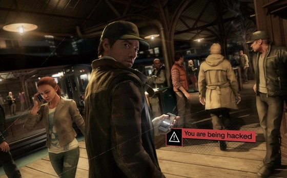
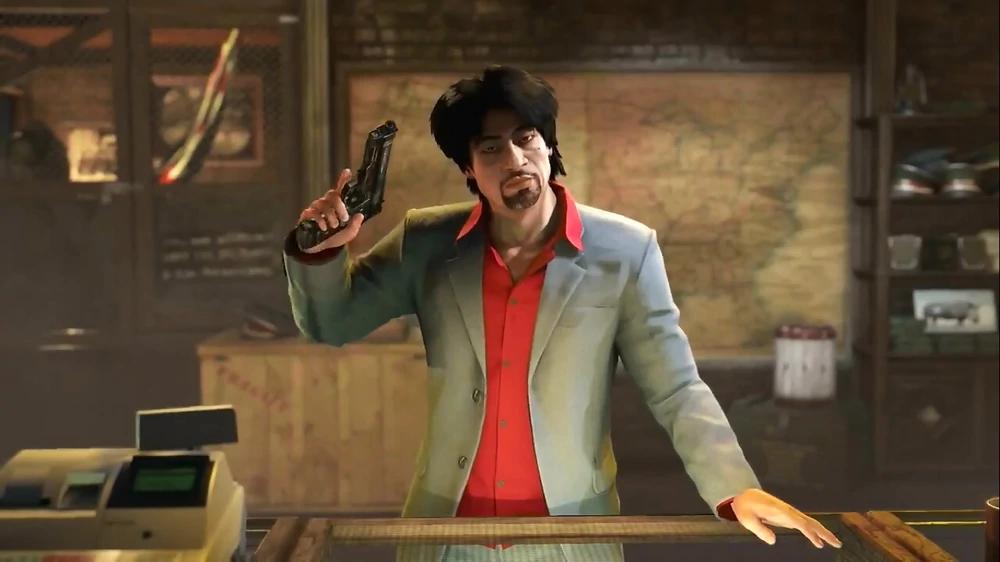
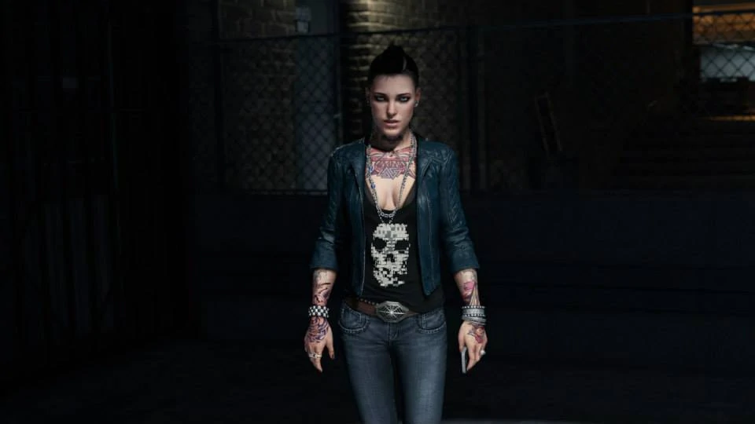
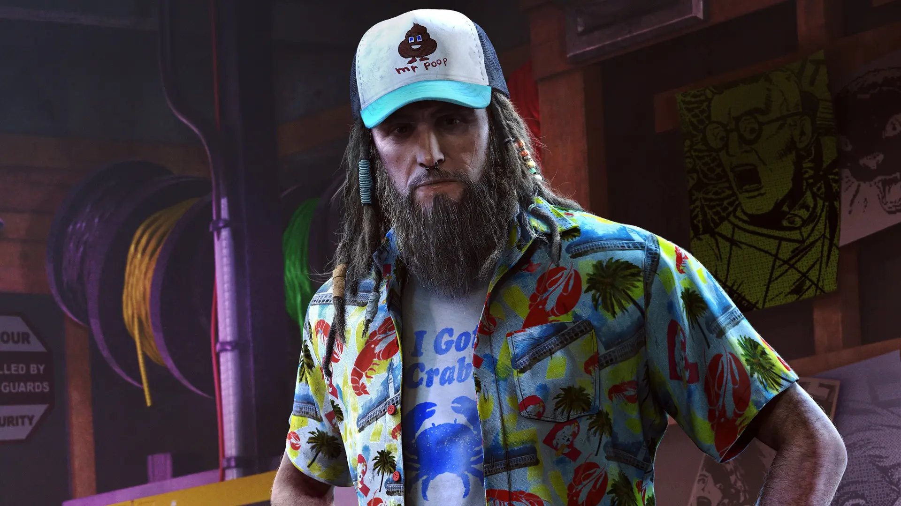
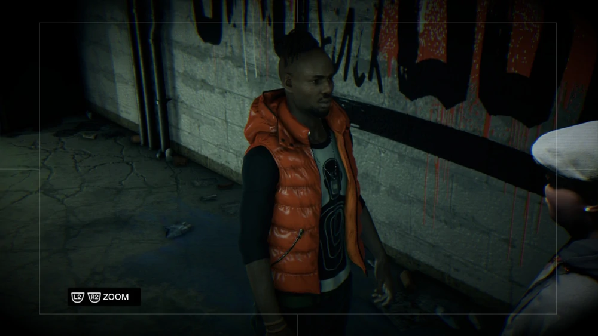

Watch Dogs es un videojuego de mundo abierto y acción-aventura
desarrollado por Ubisoft Montreal para las consolas Wii U, PlayStation
4, PlayStation 3, Xbox 360, así como para Microsoft Windows. Ambientado
en Chicago, donde una red central de ordenadores conecta a todo y a
todos, Watch_Dogs explora el impacto de la tecnología en nuestra
sociedad. Usando la ciudad como arma, te embarcarás en una misión
personal para administrar tu propia justicia.
DEDSEC
DedSec es el grupo de hackers más famoso que opera en Watch Dogs. No
están afiliados con Aiden Pearce, aunque él tiene relaciones con
algunos de sus miembros. El propio grupo se opone a la implementación
y uso del ctOS, tienen el objetivo de probar que el sistema es
defectuoso e innecesario. Los miembros del grupo hackeo varios
sistemas ctOS con fines destructivos, con el fin de poner a la vista
sus debilidades y vulnerabilidades. Una de las formas en que DedSec ha
expresado su opinión y ha dado a conocer su presencia es a través de
la incautación del sitio web oficial del ctOS. El sitio web fue
incautado y posteriormente transformado en una página de publicidad
ambigua. La página se volvió completamente negra y cubierta con un
logotipo de DedSec, formado por caracteres ASCII. Del mismo modo, han
vandalizado numerosos medios de publicidad de ctOS y otras cosas mas.
AIDEN PEARCE
Aiden Pearce también conocido como "The Fox", "El Vigilante" o El
Justiciero es el personaje principal del juego Watch Dogs. Conocido
por ser un hacker muy hábil, que tiene acceso a los CtOS de Chicago
gracias a su Analizador, y obsesionado con la vigilancia, protección y
control. Las personas que amaba resultaron heridos en el pasado y
están siendo atacados una vez más, por lo que se ha convertido en un
vigilante para tratar de evitar esto.
ENTRE HACKERS Y GANGSTERS
Aiden Pearce junto a Clara Lille y Raymond Keannye llevan a cabo la
enorme y dificultosa tarea de derribar la infraestructura del ctOS que
controla toda la información de Chicago, pero para lograr esto deben de
enrentarse a mafiosos y gangster de la talla de Dermot Lucky Quinn,
quines manejan la ciudad desde las sombras. En decadas anteriores quinn
era un criminal que buscaba dinero facilmente.compró un puerto flotante
1968 que luego fue restringido en 1980 quien aparece en migas de
pan,luego creó el chicago south club en brandon docks.tambien conocio a
delford "iraq" wade quienes hicieron la banda black viceroys.





Lucky controla el sindicato del crimen de Chicago con carisma y dureza.
En algún momento se relaciona con Aiden Pearce, a quien explica como ha
ido llevando el negocio durante este tiempo. Es el dueño del club de
tráfico de personas mas importante de la ciudad.